- 动画模块改进
- 层级管理
- 和弦图
- 力导向图的重写
- 地图数据压缩
动画模块改进
-
性能优化
- 1w个对象, 每个对象10个关键帧, 一帧~10ms
-
关键帧之间Spline插值
Shape 的层级管理
和弦图
力导向图的重写
- 布局计算放入 Web Worker
- 四叉树优化
O(n2) -> O(nlogn) - ZRender 重绘的优化
- webkit内核依赖图的收敛速度降低到 1s 左右
地图数据压缩
- UTF-8 压缩算法
- 1.65M -> 315K
- 性能优化
- 动画系统
- 粒子特效
- 物理引擎
- 易用性
性能优化
-
1. 代码层面的优化
- 优化前 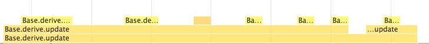 优化后 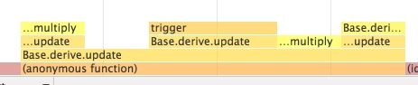
- 5000个物体的场景每一帧的更新需要几十ms => 1w个物体只需要 2~3ms
-
2. 减少GC开销, 顶点数据和动画数据使用TypedArray保存
- 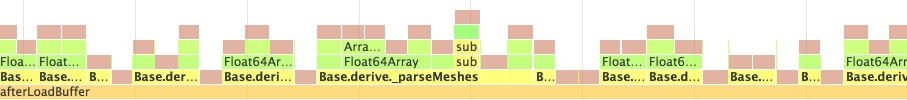
- 100w+ 顶点和 1k+ 物体的场景加载从10s+降到几百ms
- 3. 通过裁剪减少 draw call
- 4. 缓存和合并, 减少 gl call
Sponza Demo
10fps -> 60fps
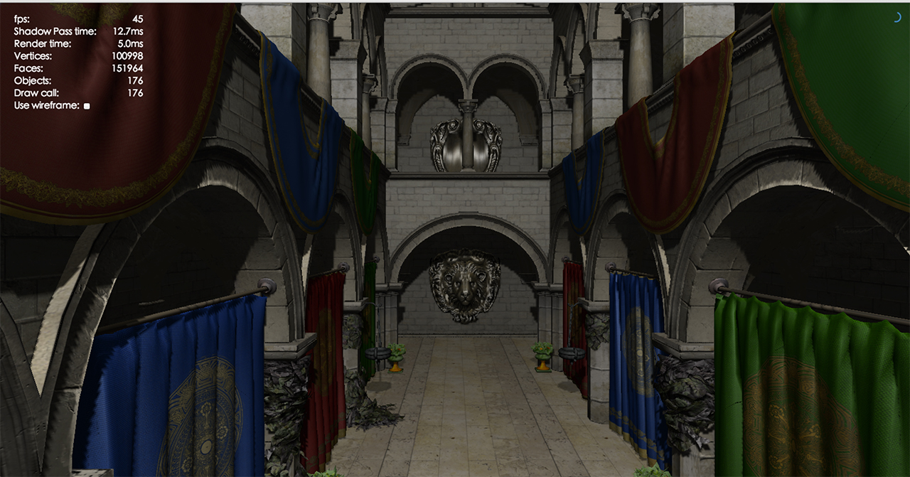画面提升
基于物理模型的材质
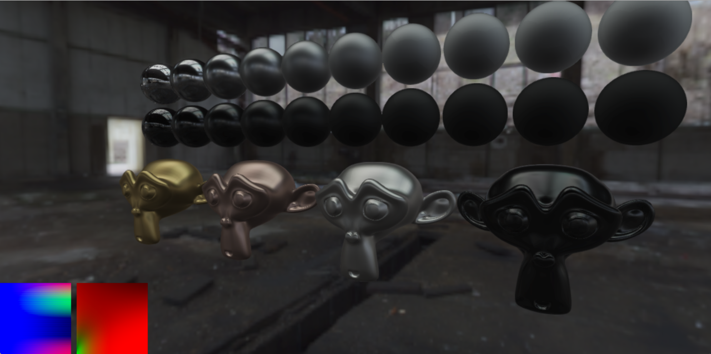完整的HDR Pipeline以及镜头特效

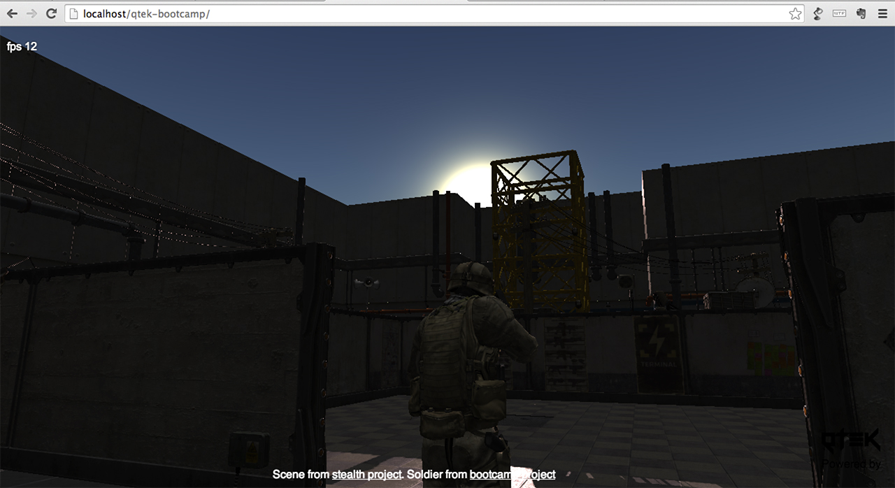
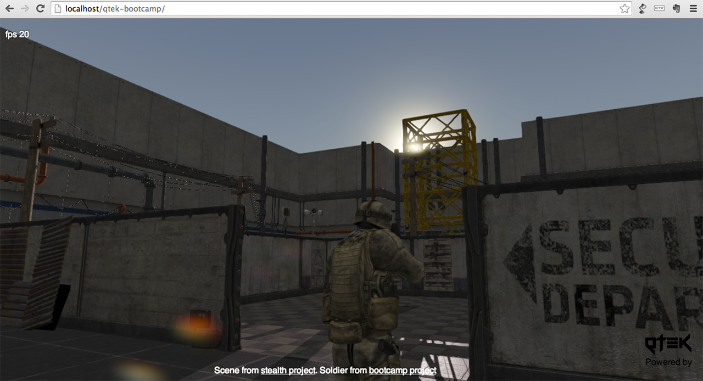
阴影的改进(PSSM)
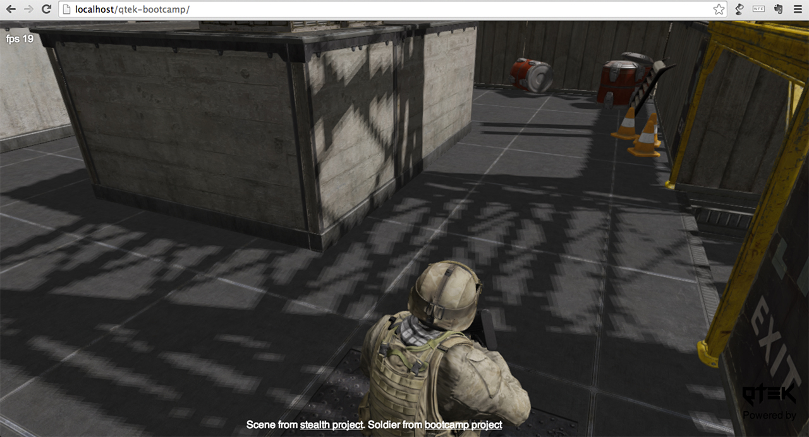
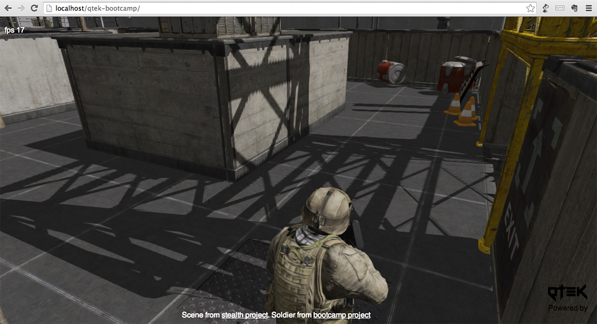
动画系统
动画混合
粒子特效
物理引擎
- 基于Ammo.js
- 使用WebWorker，通信数据统一打包成ArrayBuffer
易用性
API
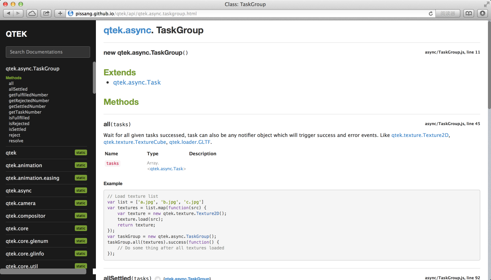Online playground
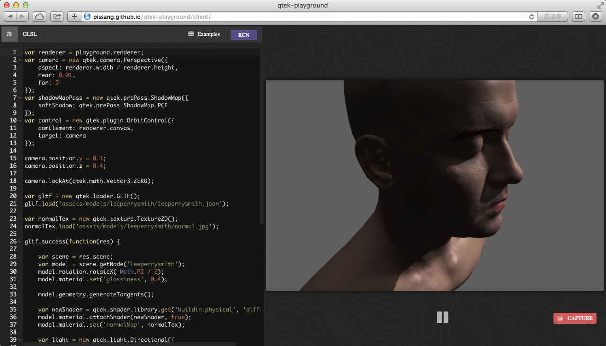第一人称射击 DEMO
应用 - 世界杯彩蛋
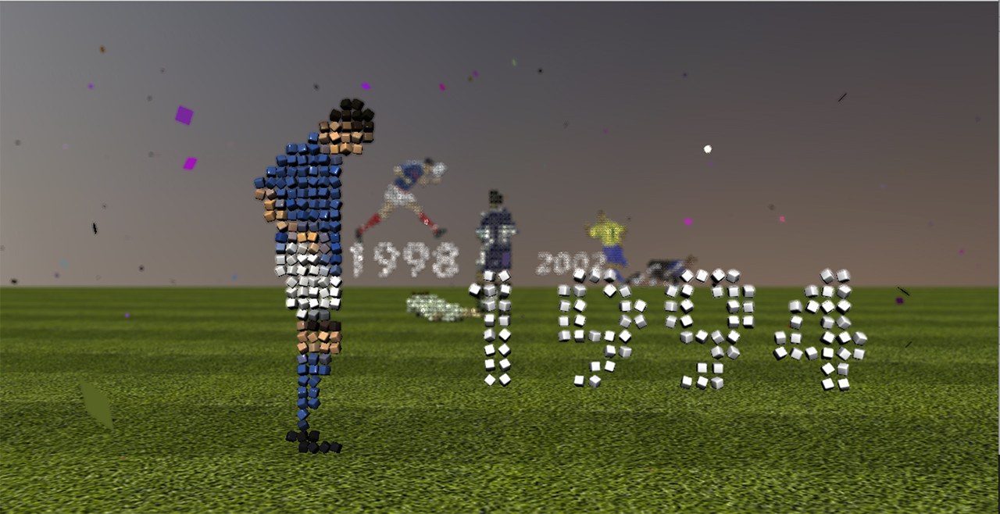WebGL加速2D渲染
- 矢量的 Path 渲染 (Line, Bezier, Arc)
- Image
- Text
- Transform
- Caching & Batching
- Gradient & Pattern
- Shadow
- Clip